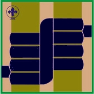

2º Etapa - Explorador(a)

En esta etapa él(la) joven adquiere las técnicas, y las herramientas necesarias para explorar y aprender a utilizarlas, a través de la vida al aire libre.
Tiempo estimado de la etapa es de 14 meses y pasa a convertirse en Explorador(a)
En esta etapa el o la scout deberá dominar los requisitos básicos de las ocho (8) pruebas incluidas, los cuales son obligatorios.
Además contará con una serie de pruebas opcionales de libre escogencia, de las cuales debe seleccionar dos (2) y cumplir con los requisitos de las pruebas en la cual quiera especializarse.
Para acceder a la información necesaria, puede pulsar sobre el Titulo de cada tema, o usar el item Temas del Plan de Adelanto ubicado en el Menú.
Nudos y Amarres
Básico- Realizar y conocer la aplicación de los siguientes nudos: Rizo Plano, Vuelta Escota, Leñador, Ballestrinque, As de Guía, Cote Doble, Amarre Diagonal, Amarre Cuadrado, Amarre en Ocho o Redondo.
- Conocer y hacer las construcciones básicas de un rincón de Patrulla: Cocina de altar, mesa con asientos, herramentero y leñero.
- Diseño y elaboración de un refugio para toda la Patrulla.
- Elaborar 20 astucias en campamento y demostrar su utilidad.
- Durante un campamento construye un asta para una bandera.
Fuego y Cocina
Básico- Identificar, clasificar y conservar la leña para fogatas en los climas característicos a su región.
- Hacer y mantener un fuego de pirámide, túnel y trampero.
- Limpiar y escoger el terreno para fogatas.
- Conocer las técnicas para prevenir incendios.
- Apagar correctamente una fogata.
- Preparar comidas básicas en campamento como: Pasta, arroz, carne, perico, plátanos, sopa y vegetales.
- Elaborar un menú balanceado para un campamento mínimo de tres días.
- Elaborar con recursos de la naturaleza implementos de cocina tales como: Platos, vasos y cubiertos.
Equipo y Herramienta
Básico- Escoger adecuadamente y limpiar el terreno para instalar una carpa.
- Conocer las reglas de seguridad para el manejo de herramientas (navaja, cuchillo, machete, tronzador, hachuela, pico, chicora) y mantenerlas en buen estado.
- Administrar y mantener el equipo de Patrulla convenientemente, garantizando su uso apropiado.
- Construir un cajón o talega de Patrulla.
- Saber impermeabilizar un toldo.
Orientación y Exploración
Básico- Identificar los puntos cardinales, laterales y colaterales de la rosa de los vientos.
- Orientarse utilizando la brújula.
- Leer planos y mapas Geopolíticos.
- Preparar una libreta de campo siguiendo una ruta y preparar el croquis de ruta.
- Preparar una excursión con pernocta, donde participe su Patrulla. Elaborar la libreta de campo, mapa de la ruta que seguiste y el croquis del área en que acampaste.
- Ubicar el Norte guiándote por las constelaciones (al menos dos).
- Calcular áreas, alturas y distancias utilizando métodos de estimación.
- Conocer por lo menos diez (10) constelaciones visibles desde su región.
- Saber leer y utilizar un mapa estelar, ubicando las constelaciones antes descritas.
- Conocer los periodos en que se observan las constelaciones antes mencionadas y las razones de ello.
Primeros Auxilios
Básico- Dotar y mantener un equipo completo de primeros auxilios de Patrulla.
- Conocer como se hace y tomar los signos vitales (frecuencia respiratoria, tensión arterial, temperatura, reflejo pupila y pulso), considerando los valores normales y que hacer en caso de shock.
- Saber que hacer en caso de: Excoriaciones, heridas, quemaduras y picaduras de insectos.
- Saber hacer los siguientes vendajes y demostrar su uso: mano, pie, rodilla, cabestrillo, cabeza y clavícula.
- Identificar y realizar diferentes tipos de camillas para el traslado de heridos.
- Saber prestar asistencia psicológica en caso de emergencias.
Comunicaciones
Básico- Conocer el abecedario y los signos convencionales en semáforo. Trasmitir y recibir por lo menos ocho palabras por minuto.
- Preparar un juego de banderolas de acuerdo a las normas internacionales.
- Integrarse y mantener la cadena de comunicación (que puede usarse en emergencias), para tu Tropa.
- Crear o participar en una cadena de comunicación (con la comunidad, edificio, instituciones, zona rural etc.) en caso de emergencia, utilizando el mejor medio a su alcance (Internet, radioaficionados, telégrafo, zumbador u otro medio).
- Visitar junto con tu Patrulla un medio de comunicación de la comunidad donde vives.
- Crear claves y códigos secretos.
Seguridad
Básico- Conocer las normas para prevenir accidentes en el hogar.
- Realizar un inventario en tu casa y en el local de grupo, de los objetos o situaciones que puedan generar accidentes, e incentivar acciones para mejorarlos.
- Elaborar una lista con los datos personales y teléfonos de emergencias: policías, hospitales, bomberos, G.N., Centros asistenciales, grupos de rescate, etc.
- Saber que hacer en caso de corto circuito, incendios, fugas de gas y desastres naturales frecuentes en tu zona.
- Realizar un inventario en tu comunidad, edificio o colegio, de los objetos o situaciones que pueden generar accidentes e incentivar acciones para mejorarlo.
Espiritualidad
Básico- Practicar la Ley y la Promesa Scout en tu vida diaria.
- Participar en un servicio de un día que puede ser en tu colegio, comunidad o local de grupo.
- Practicar la buena acción diaria.
- Participar activamente en las ceremonias o celebraciones de la religión a la que perteneces.